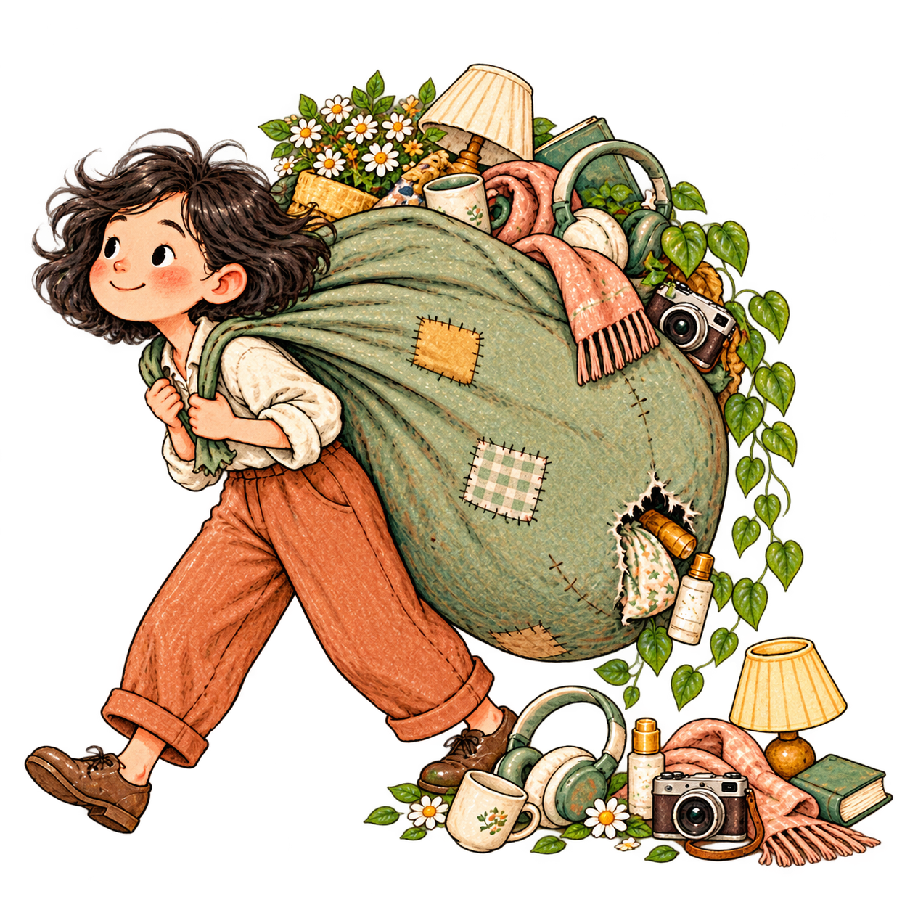

SHOKZ · RUNNING HEADPHONES
Which Shokz Headphones Are Best for Running?
What owners say about fit, comfort, sound, and the trade-offs.
Read the owner discussions ↗A LITTLE COLLECTION BY LIZZY
Discover things that could make everyday
life a little lovelier.

a pocketful of lovely thingsSHOKZ · RUNNING HEADPHONES
What owners say about fit, comfort, sound, and the trade-offs.
Read the owner discussions ↗I’m drawn to things that earn a place in daily life—through usefulness, comfort, or the simple pleasure of having them around.
With love, LizzyI bring together product information, details shared by brands, and customer feedback to create useful, balanced recommendations. For product information or collaboration enquiries, get in touch.
wanghz0512@gmail.com ↗Questions, product suggestions, or a detail to correct? I’d love to hear from you. Please include the product name and a source when suggesting a correction.